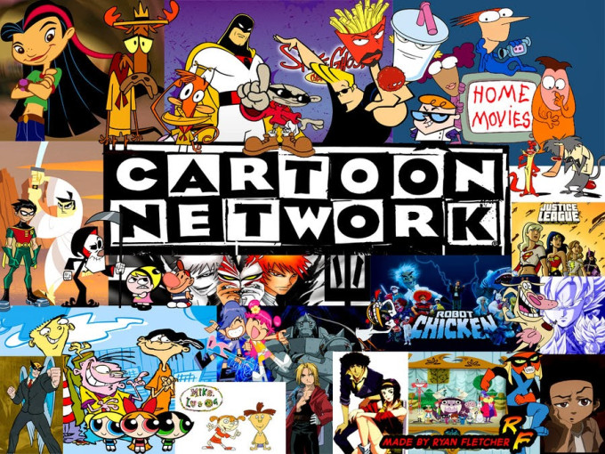

Wasting time every night debating with yourself or your partner about what to watch on Netflix is a drag. It burns people’s time and good will, robs great creators of attention and leaves Netflix vulnerable to competitors who can solve discovery. A Reelgood study estimated that the average user spends 18 minutes per day deciding.
To date, Netflix’s solution has been its state-of-the-art artificial intelligence that offers personalized recommendations. But that algorithm is ignorant of how we’re feeling in the moment, what we’ve already seen elsewhere and if we’re factoring in what someone else with us wants to watch too.
This week Netflix introduced one basic new approach to discovery: a shuffle button. Click on a show you like such as The Office, and it will queue up a random episode. But that only works if you already know what you want to watch, it’s not a movie and it’s not a linear series you have to watch in order.
Here are three much more exciting, applicable and lucrative ways for Netflix (or Hulu, Amazon Prime Video or any of the major streaming services) to get us to stop browsing and start chilling.
Netflix channels
For the history of broadcast television, people surfed their way to what to watch. They turned on the tube, flipped through a few favorite channels and jumped in even if a show or movie had already started. They didn’t have to decide between infinite options, and they didn’t have to commit to starting from the beginning. We all have that guilty pleasure we’ll watch until the end whenever we stumble upon it.
Netflix could harness that laziness and repurpose the concept of channels so you could surf its on-demand catalog the same way. Imagine if Netflix created channels dedicated to cartoons, action, comedy or history. It could curate non-stop streams of cherry-picked content, mixing classic episodes and films, new releases related to current events, thematically relevant seasonal video and Netflix’s own Original titles it wants to promote.
For example, the comedy channel could run modern classic films like The 40-Year-Old Virgin and Van Wilder during the day, top episodes of Arrested Development and Parks And Recreation in the afternoon, a featured recent release film like The Lobster in prime time, and then off-kilter cult hits like Monty Python or its own show Big Mouth in the late-night slots. Users who finish one video could get turned on to the next, and those who might not start a personal favorite film from the beginning might happily jump in at the climax.